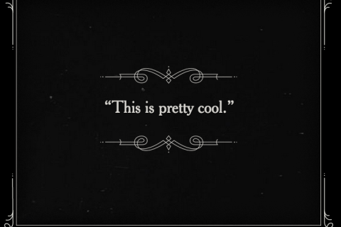

Title cards (also referred to as intertitles) are frames of text inserted directly into a video to provide context and structure. Sometimes title cards work to highlight key information in a video, either through summarizing information or reinforcing main points. They also act as a “directory” for the content of the video by clearly segmenting the video into different parts (kind of like chapters in a book, but displayed clearly on the screen).

Title cards appear as pictures or frames throughout the video.
A popular use of title cards was in silent films. They provided dialogue and context for which there was no audio
Title cards are a great way to give your video more structure for viewers, and are a simple way to make your content both memorable and enjoyable for your audience.